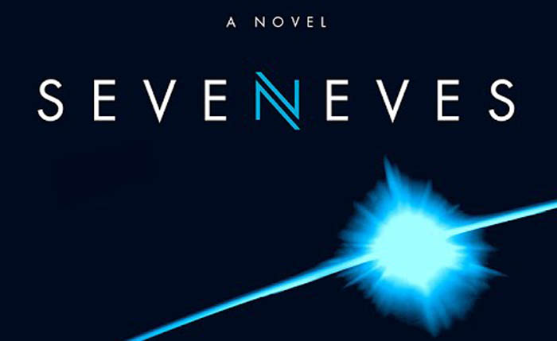

Grigg Skjellerup in sci-fi
Grigg Skjellerup was used in Neal Stephenson's sci-fi novel SevenEves as a source of water and propellant to allow their ship the Endurance to execute the burns needed to raise their apogee to achieve the big ride strategy by going to the chunk of the moon called Cleft.
This work
by Kai BouwmanCC BY-SA 4.0